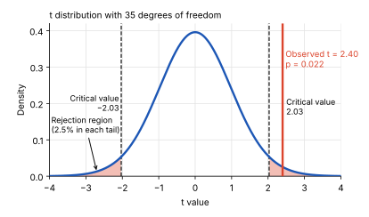
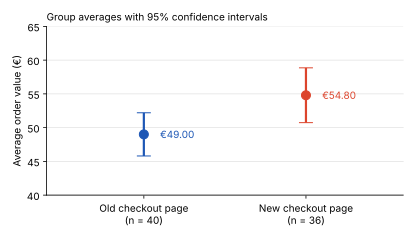

Inference & experiments
The t-Test: Comparing Averages in One or Two Groups
Your online shop redesigned its checkout page. In the first week after the launch, 36 orders came in with an average order value of €54.80. The target has always been €50.
Is that €4.80 difference a real shift—or could it simply be random variation in the orders you happened to receive?
A t-test helps answer exactly this question: is a difference between an average and a reference value, or between two averages, larger than we would reasonably expect from random variation?
In this post, we’ll look at the three main versions of the t-test and, more importantly, when each one is the right tool. For how the t-test differs from the z-test, see T-Test vs. Z-Test.
In this article
What a t-Test Measures
Imagine two shops with the same average order value of €54.80.
In the first, almost every order is between €50 and €60. In the second, orders range from €10 to €200.
The average is identical. But the evidence behind that average is very different.
A €4.80 gap above the target is more convincing when orders are tightly clustered. When orders vary widely, the same gap could easily be explained by random sampling variation.
A t-test makes this comparison explicit. It relates the difference we observed to the amount of variation we would expect from random sampling:
t = observed differencestandard error
- Observed difference — the signal: how far the sample average is from the reference value, or how far two sample averages are from each other.
- Standard error — the noise: how much a sample average would typically vary from sample to sample.
The standard error becomes smaller when we have more observations or less variability.
So:
Large difference + little noise → large |t| → stronger evidence against H0
The p-value then tells us how unusual a t-statistic this extreme would be if the null hypothesis were true.

Three Types of t-Tests
At this point, the natural question is:
What exactly are we comparing?
That determines which t-test to use.
| Test | Question | Example |
|---|---|---|
| One‑sample | Does one population mean differ from a known value? | Is average order value different from the €50 target? |
| Two‑sample | Do two independent groups have different population means? | Do customers using the new checkout spend differently from those using the old one? |
| Paired | Does the mean change between two measurements of the same units? | Did the same customers spend differently before and after the redesign? |
The key distinction is therefore not simply the number of groups.
It is:
What are the observations, and how are they related to each other?
One-Sample t-Test: Is Our Average Order Value Different From the Target?
Your shop has 36 orders after the redesign:
- Sample mean: x̄ = €54.80
- Sample standard deviation: s = €12.00
- Target: μ0 = €50
Step 1: State the hypotheses
- H0: The population mean order value equals the target: μ = 50
- H1: The population mean order value differs from the target: μ ≠ 50
Step 2: Calculate the test statistic
First, calculate the standard error:
SE = s√n = 12√36 = 2.00
Then calculate the t-statistic:
t = x̄ − μ0SE = 54.80 − 502.00 = 2.40
So our observed mean is 2.4 standard errors above the target.
Step 3: Find the p-value
Because we estimated the population standard deviation from the sample, we use a t-distribution with:
df = n − 1 = 35
For t = 2.40 and 35 degrees of freedom, the two-sided p-value is approximately 0.022.
In other words, if the true population mean were actually €50, observing a t-statistic at least this extreme would be fairly unlikely.

Step 4: Draw a conclusion
Because:
p = 0.022 < 0.05
we reject H0.
There is statistically significant evidence that the population mean order value differs from €50.
The 95% confidence interval is approximately:
€50.74 ≤ μ ≤ €58.86
Because €50 is outside this interval, the confidence interval leads to the same conclusion as the hypothesis test.
Statistical significance ≠ business significance.
The estimated difference is €4.80 per order. Whether that is meaningful or profitable depends on margins, costs, and—most importantly—whether the checkout redesign actually caused the change. That’s where an A/B test comes in.
Python
import numpy as np
from scipy import stats
n, x_bar, s, mu_0 = 36, 54.80, 12.00, 50
se = s / np.sqrt(n)
t = (x_bar - mu_0) / se
df = n - 1
p = 2 * stats.t.sf(abs(t), df)
t_crit = stats.t.ppf(0.975, df)
ci = (x_bar - t_crit * se, x_bar + t_crit * se)Two-Sample t-Test: Old vs. New Checkout Page
Now suppose the shop also has data from the old checkout page. Every order comes from a different customer, so the two groups are independent:
- Old page: n = 40, x̄ = €49.00, s = €10.00
- New page: n = 36, x̄ = €54.80, s = €12.00
The classic version, Student’s t-test, assumes that both groups have the same variance. In practice, that is rarely guaranteed. Here, the standard deviations are already different: €12.00 for the new page and €10.00 for the old one.
Welch’s t-test does not make this assumption and rarely performs worse, so it is the safer default.
The hypotheses compare the two population means:
- H0: The population mean order values are equal: μnew = μold
- H1: The population mean order values differ: μnew ≠ μold
The standard error now combines the noise of both groups:
SE = √(snew2nnew + sold2nold) = √(12236 + 10240) = √(4.00 + 2.50) = 2.55
The t-statistic divides the difference between the two sample averages by this standard error:
t = x̄new − x̄oldSE = 54.80 − 49.002.55 = 2.27
Welch’s test adjusts the degrees of freedom to the variances and group sizes. Here, software calculates about 68.4 degrees of freedom, and the two-sided p-value is approximately 0.026.
Because 0.026 < 0.05, we reject H0. There is statistically significant evidence that the population mean order values differ. The 95% confidence interval for the difference is approximately €0.71 to €10.89, which excludes 0.
Student’s t-test would give almost the same result here (t = 2.30, p = 0.024), because the two standard deviations are similar. The choice matters more when the groups differ a lot in size and variability.

Python
from scipy import stats
result = stats.ttest_ind_from_stats(
mean1=54.80, std1=12.00, nobs1=36, # new page
mean2=49.00, std2=10.00, nobs2=40, # old page
equal_var=False # Welch's t-test
)
print(result.statistic, result.pvalue) # 2.27, 0.026With the raw order values in two columns, stats.ttest_ind(new, old, equal_var=False) gives the same result.
Paired t-Test: The Same Customers Before and After the Redesign
The shop also tracked 30 customers who ordered both before and after the redesign. Now there are not two groups, but one group measured twice.
The key step is to calculate the change for each customer (after minus before). The test then works with these differences:
- Number of customers: n = 30
- Mean difference: d̄ = €3.60
- Standard deviation of the differences: sd = €8.00
A paired t-test is simply a one-sample t-test on these differences, with 0 as the reference value:
- H0: The population mean difference is 0: μd = 0
- H1: The population mean difference is not 0: μd ≠ 0
SE = sd√n = 8.00√30 = 1.46
t = d̄SE = 3.601.46 = 2.46
With df = n − 1 = 29, the two-sided p-value is approximately 0.020. Because 0.020 < 0.05, we reject H0. The 95% confidence interval for the population mean difference is approximately €0.61 to €6.59.

Why does pairing matter? Customers differ a lot: some always spend around €20, others €90. This variation is in both measurements, so it cancels out when we look at each customer’s own change.
Now imagine we ignored the pairing and treated the 30 “before” orders and the 30 “after” orders as two independent groups. With order values varying by about €15 between customers, the same €3.60 difference would give t = 0.93 and p = 0.36, which is no evidence of a change at all. The data is the same; only the test is different.
Pairing comes from the design, not from the result
Use a paired test only when each observation in one measurement has a natural partner in the other, such as the same customer, the same store or the same device. Do not pair observations afterwards just because it makes the p-value smaller.
Python
import numpy as np
from scipy import stats
n, d_bar, s_d = 30, 3.60, 8.00
se = s_d / np.sqrt(n)
t = d_bar / se
df = n - 1
p = 2 * stats.t.sf(abs(t), df) # 0.020
t_crit = stats.t.ppf(0.975, df)
ci = (d_bar - t_crit * se, d_bar + t_crit * se)With the raw order values of the same customers, stats.ttest_rel(after, before) gives the same result.
Assumptions and What to Do When They Fail
A t-test gives trustworthy p-values only if its assumptions are reasonably met. Four checks cover most business data:
- Independent observations. Each value should not influence another. If one customer places five orders and all five enter the sample as separate observations, the sample behaves as if it were larger than it is. Fix: average the orders per customer first, or use a paired design when you compare the same customers over time.
- Roughly normal averages. The test needs the sample average to be roughly normally distributed. With about 30 or more observations, the Central Limit Theorem usually takes care of this, even if individual orders are skewed. With smaller samples, check a histogram or a Q-Q plot (see Normal Distribution). In a paired test, this applies to the differences, not to the raw values.
- No dominating outliers. Order values are often right-skewed. A single €2,000 order can pull an average and inflate the standard deviation. First check whether it is a real order. If the skew is strong and the sample is small, use a log transformation or a rank-based test: the Mann-Whitney U test for two independent groups, or the Wilcoxon signed-rank test for paired data.
- Equal variances (Student’s version only). Student’s two-sample t-test assumes equal variances in both groups. Welch’s t-test removes this assumption, which is why it is the default.
How to Choose the Right t-Test
Two questions are enough to pick the right test: What are you comparing? and, if there are two sets of measurements, are they linked?

How to Explain It to Stakeholders
“In the first week after the redesign, the average order value was €54.80, compared with our target of €50. A one-sample t-test shows that this gap is unlikely to be random variation (t = 2.40, p = 0.022).”
“Compared with the old checkout page, the new one has a higher average order value, by €5.80 per order. A two-sample t-test finds statistically significant evidence of a difference (p = 0.026), but the plausible range is wide: between about €0.70 and €10.90 per order. Among 30 customers who ordered both before and after, the average order grew by €3.60 (p = 0.020).”
“All three tests point in the same direction, but they show a difference, not its cause. Seasonality or a promotion could play a role. To know whether the redesign really drives higher order values, we need an A/B test.”
Key Takeaways
- A t-test compares signal with noise. It divides the observed difference by the standard error to judge whether the difference is larger than random variation would produce.
- The data structure picks the test. One group against a known value: one-sample. Two independent groups: two-sample (Welch). The same units measured twice: paired.
- Check the assumptions. Independence, roughly normal averages and no dominating outliers matter more than the exact formula.
- Significance is not impact. A small p-value shows that a difference is unlikely to be random, not that it is large, profitable or caused by the change.